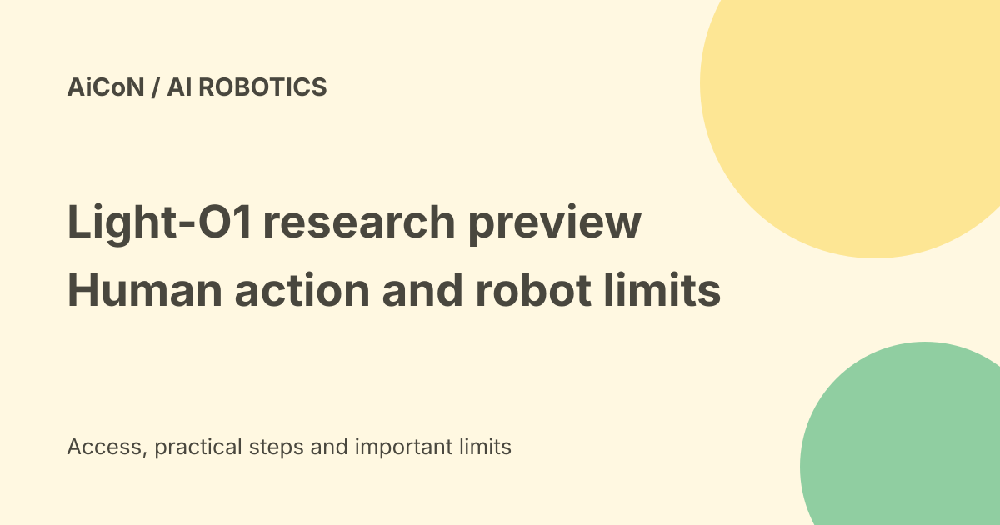

Light-O1 Preview: human-action learning, access and robot limits
Light Origins studies whether learning from human movement can help robots learn whole-body tasks. Its public Light-O1 Preview currently generates humanoid motion from text and includes a local 3D preview route. You can inspect the research without owning a robot, but deploying motion on real hardware is a separate, safety-sensitive job.

What is Light-O1?
Light-O1 is Light Origins' whole-body action model. The company describes learning structured human movement from video, then adapting that knowledge to different robot bodies.
Whole-body means coordinating movement across the body rather than controlling only a hand. Walking while handling an object is one example. The announcement calls this loco-manipulation, a technical name for movement plus object handling.
What does the public preview do?
The checked Hugging Face model card describes a reasoning text-to-action model. Give it a movement instruction, and it produces an explanation followed by action codes that decode into humanoid motion.
This public interface is not a general home robot that watches any video and instantly copies it. The model card's documented input is text. The broader research announcement also discusses visual observations and real robot tasks.
Human video and the scaling result
The research page describes six training budgets from 3.75 billion to 120 billion multimodal tokens. It says the largest budget corresponds to one hundred thousand hours of human action.
Tokens here are processing units for text, visual material and movement codes. The company measures whether more pretraining reduces later prediction errors after adapting the model to other data.
Its reported trend covers human egocentric data, Unitree G1 robot data and its own LightBot data. These are the team's published results. This guide did not reproduce the training or independently certify the model.
Prediction accuracy is not a safety guarantee
The detailed protocol uses held-out data and open-loop pose evaluation. Open-loop evaluation measures predicted movement against recorded movement, rather than proving that a robot will recover safely from every live situation.
Lower pose error is useful evidence, but it does not establish safe behaviour around people, pets, stairs or fragile objects. Real hardware brings balance, contact, timing and emergency-stop requirements.
Free-versus-paid verdict
The model card lists Apache License 2.0 and points to required upstream notices. The public download is not a paid consumer subscription in the checked documentation.
Free weights do not mean free computing or free robot hardware. You may pay for storage, a compatible GPU, electricity, cloud time and engineering. No universal cloud price or Indian hardware package was established.
Technical requirements
The preview card lists a six-billion-parameter BF16 model. GPU inference requires Linux x86-64, Python 3.11 and a CUDA 13 compatible environment.
The card does not give a universal minimum GPU-memory promise. Check the repository's current requirements before renting hardware. An ordinary phone or low-memory laptop is not a documented inference target.
Ways to inspect it without a robot
The model card links to a hosted playground and the code repository. The local server route provides streamed text and a 3D preview of generated action.
A visualised motion is still a generated result, not proof that a real robot can execute it safely. The repository also documents an optional simulation example. Begin there rather than sending untested motion to hardware.
A careful local route
- Open the exact LightOriginsHQ model card, not a similarly named OCR model.
- Read the licence and upstream notices.
- Check Linux, Python, CUDA and GPU compatibility.
- Follow the linked Light-O1 repository's current setup instructions.
- Download weights only to an environment with enough storage.
- Start with a harmless movement prompt and the 3D preview.
- Inspect the complete motion for implausible positions.
- Use simulation and qualified robotics review before hardware trials.
No model download, rented GPU or robot command was performed for this guide.
India fit
This is more relevant to robotics researchers, university teams and engineers than someone looking for a daily-use app. Indian access to a public model page does not establish local support or a ready-to-buy robot.
Budget for the complete research setup. Respect the rights and privacy of people in any video or movement data you collect for further work.
What changed since the original post?
The earlier post said humanoid hardware was required to use the preview. Current model documentation supports text-to-motion generation and a local 3D preview without a physical robot. Hardware is needed for real-world execution, not merely inspecting generated movement.
We also separate the broad research system from the narrower public preview and qualify the team's own scaling claims.
Frequently asked questions
Is this LightOnOCR?
No. Light-O1 is from Light Origins and concerns robot movement. LightOnOCR is a different document-reading model.
Do I need a robot to see generated movement?
No. The documented local preview route provides a 3D view.
Can I use it as a finished home robot?
The checked release does not establish that. It is a research preview.
Sources: Official research announcement · Public model card, licence and requirements · Official inference and simulation repository · Independent reporting of vendor results. Checked 7 October 2026.